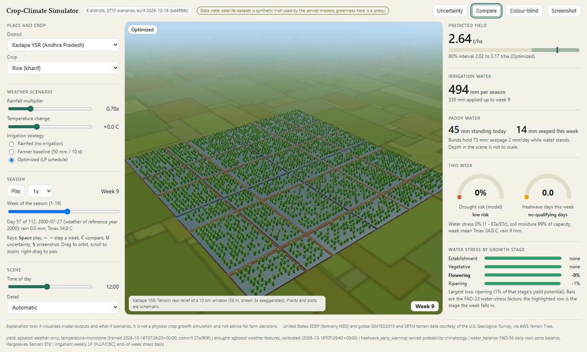

Climate resilience, India
Veylora
District-level early warning for heatwaves and drought, crop-yield forecasts with honest uncertainty, and irrigation plans for Andhra Pradesh, Telangana, Karnataka and Tamil Nadu.
The forecast, risk-map and advisory dashboards are a Streamlit app and are not hosted on this page; run them with make dashboards (see the repository).
NoteSynthetic data in the pipeline: satellite_16d (100%). The forecasts use observed weather and ICRISAT yields only; the synthetic satellite table appears only in an experimental comparison.
- 51Yield-reporting districts
- 4Crops
- 1991–2024Weather record
- 2000–2017Yield record
See a season, week by week
The simulator runs in your browser, with no sign-in and nothing to install. Change rainfall and temperature, compare irrigation strategies and watch yield, water use and stress respond.

What Veylora does
Four tools for one decision: what the coming weeks mean for a crop in a district.
Early warning
Heatwave and drought probabilities for a district and date, replayed on observed history. No live forecast feed is connected.
Yield forecasts
A forecast with an 80% interval, what-if rainfall and temperature, and a comparison with simple baselines.
Irrigation plans
A weekly water plan from a soil-water balance and a linear programme; paddy rice is modelled as a ponded field.
Farmer advisories
Short, template-driven messages in English, Hindi, Tamil and Telugu. The translations are drafts awaiting native-speaker review.
What the evaluation shows
Measured on held-out years only, and reported as found. Intervals, baselines and the negative results are on the Methodology page of the dashboards.
of mean yield (RMSE relative to each district's prior mean). That is about level with the best simple baseline (district trend, 41%).
PR-AUC 0.38 against 0.09 for a climatology forecast.
than a 600 mm baseline, keeping 98% of its yield (20 district-season cases). Whether that trade-off is acceptable is for agronomists and farmers to decide.
Read this before using a number
- Units are the 51 district groups for which ICRISAT reports yields (1966 boundaries), not villages or today's districts.
- Yields are observed to 2017 only, so the latest hold-out years are 2015 to 2017.
- Forecast skill over simple baselines is small or unproven; use the intervals, not just the point forecast.
- Crop and price parameters are approximate and have not been verified against current sources.
- The simulator's frame rate was tested with software rendering only.